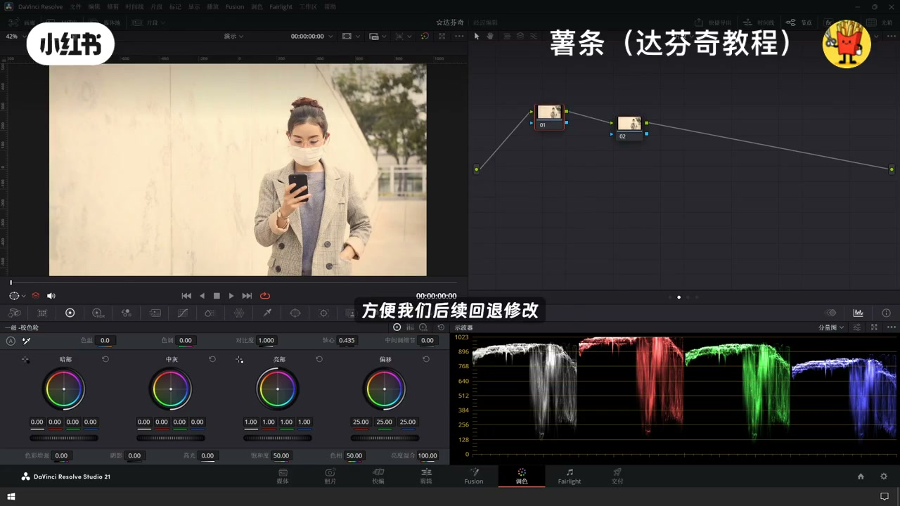
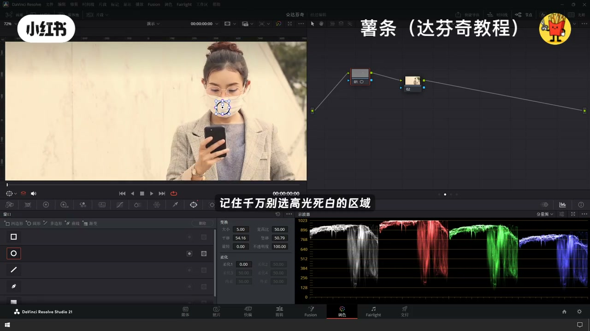
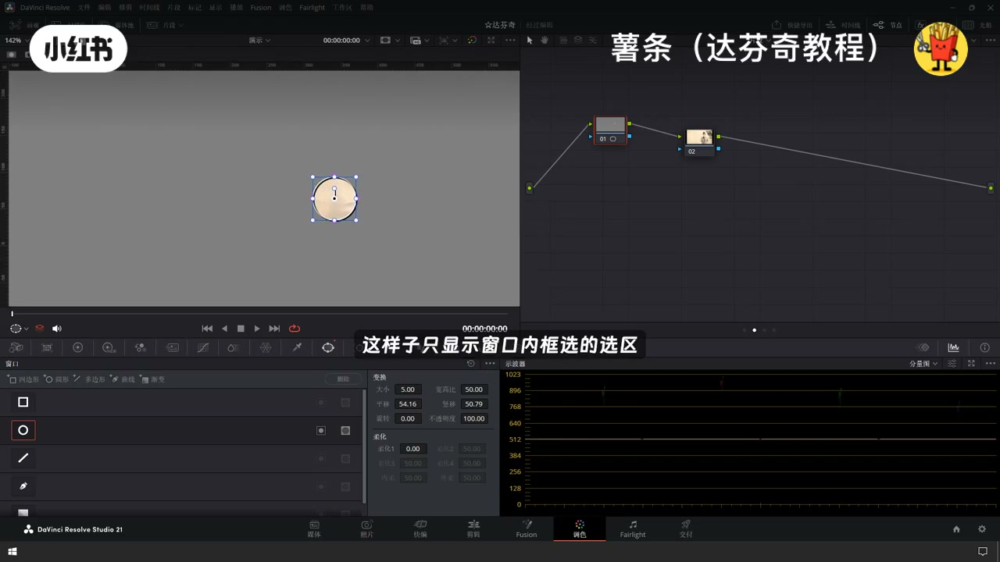
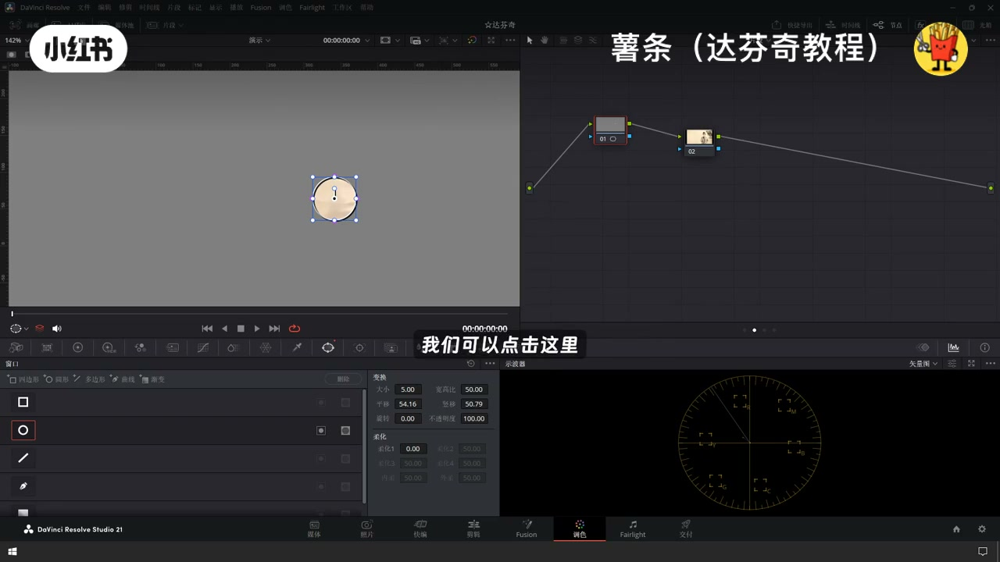
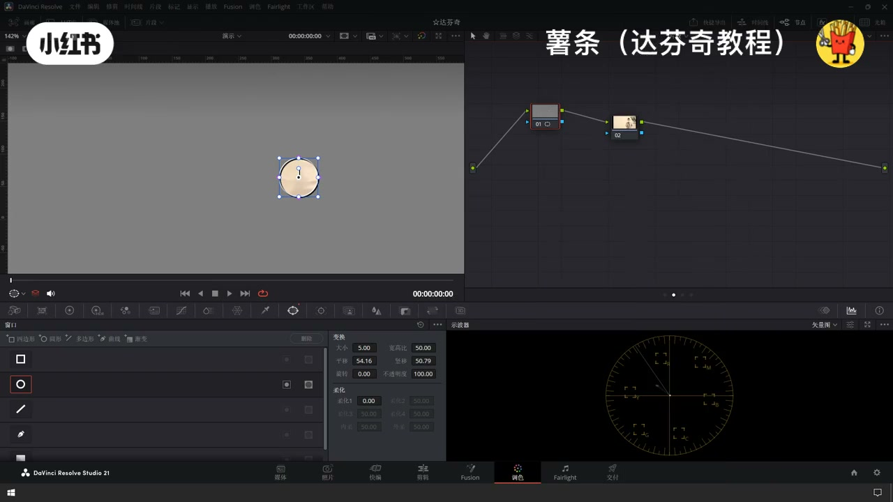
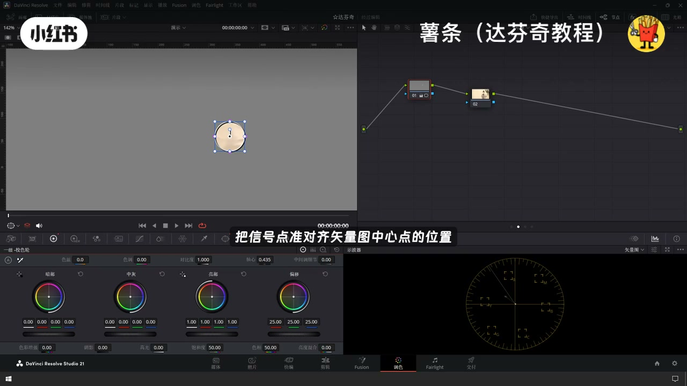
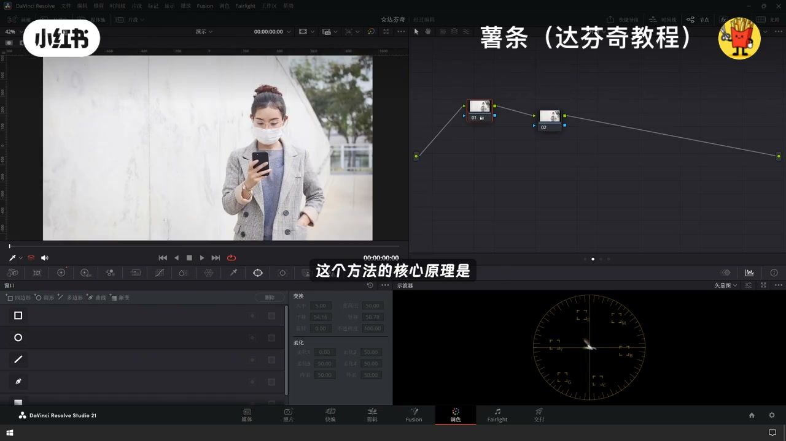

内容要点
「达芬奇最科学的精准白平衡技巧教程方法示波」教程要点：传分器里面目前最科学的精准白平衡矫正方法 → 很多人调达分器白平衡的时候 → 还在靠肉眼去调整或者用吸管工具去吸 → 这样子很容易调不准…
知识结构
传分器里面目前最科学的精准白平衡矫正方法
或者是过曝的地方
有点偏移
- 传分器里面目前最科学的精准白平衡矫正方法
- 很多人调达分器白平衡的时候
- 还在靠肉眼去调整或者用吸管工具去吸
- 这样子很容易调不准
- 今天分享了一套目前最科学的
传分器里面目前最科学的精准白平衡矫正方法
00:00–00:40传分器里面目前最科学的精准白平衡矫正方法
传分器里面目前最科学的精准白平衡矫正方法；很多人调达分器白平衡的时候；还在靠肉眼去调整或者用吸管工具去吸；这样子很容易调不准；今天分享了一套目前最科学的；施波器精准白平衡矫正方法；首先新建一个独立的矫正节点；专门用来做白平衡；不要跟曝光调色混在一块；方便我们后续回退修改；接着我们画一个圆形的窗口；方选画面里真实的纯白或者是中性灰的物体；记住千万别选高光死白的区域

00:39–01:16或者是过曝的地方
或者是过曝的地方；因为过曝的位置的RGB信息是已经丢失的；调出来那肯定是不准的；接着我们按Shift H高亮显示；这样子只显示窗口内方选的选区；隐蔽掉画面里面其他的圆；我们将分红亮图切换到实亮图；试播器就只会读取我们选中的这块中性色；因为我们这个图像的饱和度比较低；所以这个试播器看着不是很明显；我们可以点击这里；显示两倍缩放；这样子我们就可以看到试播器是往R跟Y这个方向


01:18–02:04有点偏移
有点偏移；接着我们选中这个节点右键；将Gamma改成线性；然后来到色轮面板；将亮度混合；直接拉到0；然后我们通过波动色轮配合查看试播器；把信号精准对齐实亮图中心点的位置；对齐完成之后；我们按Shift H；这个方法的核心原理是；实亮试播器的中心点位置代表的是中性不色；RGB数值平衡




口述/画面要点（39段）
结合 Whisper medium 与画面大字整理；专有名词已校对。
传分器里面目前最科学的精准白平衡矫正方法
很多人调达分器白平衡的时候
还在靠肉眼去调整或者用吸管工具去吸
这样子很容易调不准
今天分享了一套目前最科学的
施波器精准白平衡矫正方法
首先新建一个独立的矫正节点
专门用来做白平衡
不要跟曝光调色混在一块
方便我们后续回退修改
接着我们画一个圆形的窗口
方选画面里真实的纯白或者是中性灰的物体
记住千万别选高光死白的区域
或者是过曝的地方
因为过曝的位置的RGB信息是已经丢失的
调出来那肯定是不准的
接着我们按Shift H高亮显示
这样子只显示窗口内方选的选区
隐蔽掉画面里面其他的圆
我们将分红亮图切换到实亮图
试播器就只会读取我们选中的这块中性色
因为我们这个图像的饱和度比较低
所以这个试播器看着不是很明显
我们可以点击这里
显示两倍缩放
这样子我们就可以看到试播器是往R跟Y这个方向
有点偏移
接着我们选中这个节点右键
将Gamma改成线性
然后来到色轮面板
将亮度混合
直接拉到0
然后我们通过波动色轮配合查看试播器
把信号精准对齐实亮图中心点的位置
对齐完成之后
我们按Shift H
这个方法的核心原理是
实亮试播器的中心点位置代表的是中性不色
RGB数值平衡